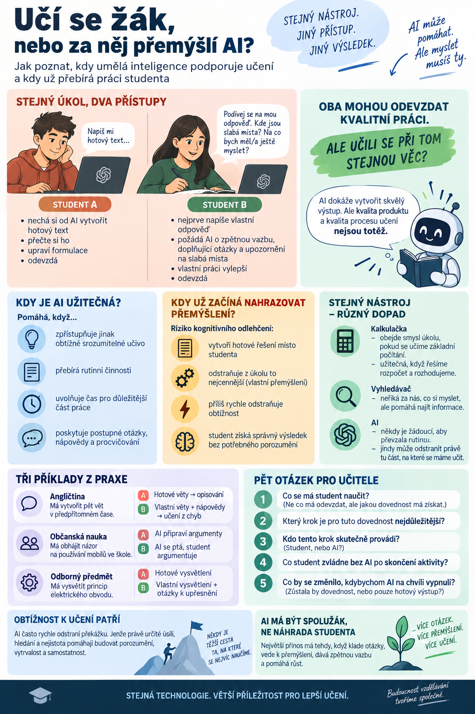

Dva studenti dostanou stejný úkol: vysvětlit, proč je důležité ověřovat informace na internetu.
První si nechá od AI vytvořit hotový text. Přečte si ho, několikrát upraví formulace a odevzdá.
Druhý nejprve napíše vlastní odpověď.
Potom požádá AI, aby našla slabá místa v jeho argumentaci, položila mu doplňující otázky a upozornila na tvrzení, která by měl doložit.
Oba použili umělou inteligenci.
Oba mohou odevzdat kvalitní práci.
Ale učili se při tom stejnou věc?
Právě tato otázka bude s dalším rozvojem AI pro školy stále důležitější.

Správný výsledek ještě nemusí znamenat učení
Generativní AI dokáže během několika sekund vytvořit text, prezentaci, řešení úlohy nebo návrh projektu.
To je užitečné, pokud učiteli pomáhá při přípravě materiálů nebo studentovi zpřístupňuje obtížně srozumitelné učivo.
Z pedagogického hlediska ale vzniká problém ve chvíli, kdy AI vykoná právě tu činnost, kterou si měl student procvičit.
Má-li se naučit argumentovat, ale argumenty vytvoří model, výborně napsaný text ještě nedokazuje jeho schopnost argumentace.
Má-li se naučit řešit rovnici, ale AI předvede celý postup, student mohl získat správný výsledek bez potřebného porozumění.
Má-li se naučit anglicky mluvit, ale AI za něj připraví všechny odpovědi, nacvičuje možná spíše čtení hotového scénáře.
Kvalita odevzdaného produktu a kvalita procesu učení nejsou totéž.
Kognitivní odlehčení: kdy pomoc začne nahrazovat přemýšlení
Microsoft ve svém stanovisku k AI ve vzdělávání upozornil na riziko označované jako cognitive offloading — přenášení části myšlenkové práce na externí nástroj.
Tohle je stanovisko Microsoftu a užitečný podnět pro návrh úloh, nikoli vědecky validovaný test pro hodnocení jednotlivých žáků.
Přenášet práci na nástroje přitom není samo o sobě špatně.
Kalkulačka nám pomáhá počítat. Slovník usnadňuje práci s jazykem. Vyhledávač pomáhá nacházet informace.
Podstatné je, jakou dovednost právě rozvíjíme.
Pokud se student učí základní početní operace, kalkulačka může obejít smysl úkolu.
Pokud se naopak učí sestavit rozpočet a rozhodovat mezi několika nabídkami, může mu kalkulačka uvolnit pozornost pro důležitější část práce.
Stejně je to s AI.
Někdy je žádoucí, aby převzala rutinu.
Jindy její ochota pomoci odstraní z úkolu to nejcennější.
Samotné označení „studijní režim“ však nezaručuje, že student skutečně přemýšlí.
Rozhodující je konkrétní aktivita.
Kdy se z užitečné pomoci stává překážka?
Představme si tři zadání.
Příklad 1: Angličtina
Úkol: Student má vytvořit pět vět v předpřítomném čase.
Použití AI A: „Napiš mi pět vět v present perfect.“
AI splní úkol a student si věty opíše.
Použití AI B: „Napišu pět vlastních vět. Neopravuj je hned. U každé chybné věty mi nejprve naznač, na co se mám podívat.“
Student musí rozpoznat chybu a opravit vlastní formulaci.
Příklad 2: Občanská nauka
Úkol: Student má obhájit názor na používání mobilů ve škole.
Použití AI A: „Napiš tři argumenty pro zákaz mobilů a dva proti.“
Použití AI B: „Řeknu ti svůj návrh pravidla. Ptej se na důvody, možné výjimky a dopady na různé studenty. Nerozhoduj za mě, jaké stanovisko mám přijmout.“
Ve druhé variantě musí argumenty vytvářet a posuzovat student.
Příklad 3: Odborný předmět
Úkol: Student má vysvětlit princip elektrického obvodu.
Použití AI A: „Vysvětli mi elektrický obvod tak, abych to mohl říct u tabule.“
Použití AI B: „Zkusím vysvětlit elektrický obvod vlastními slovy. Když použiju pojem nepřesně, polož mi otázku, která mě dovede k opravě. Odborná tvrzení pak ověříme proti učebnici.“
Druhá varianta poskytuje více příležitostí odhalit vlastní neporozumění.
Neznamená to, že vysvětlení od AI je vždy nevhodné.
Pokud student pojmu zatím vůbec nerozumí, může dobré vysvětlení potřebovat.
Rozhodující je, zda po něm přijde také vlastní práce studenta.
Náš jednoduchý test: kdo vykonává myšlenkovou práci?
Při přípravě aktivity s AI si můžeme položit pět otázek.
- Co se má student naučit?
Ne co má odevzdat, ale jakou dovednost má získat. - Který krok je pro tuto dovednost nejdůležitější?
Formulování věty? Výběr argumentu? Výpočet? Rozhodnutí? Vysvětlení? - Kdo tento krok skutečně provádí?
Student, nebo AI? - Co student zvládne bez AI po skončení aktivity?
Dokáže vlastními slovy vysvětlit pojem? Obhájit rozhodnutí? Vyřešit podobnou úlohu? - Co by se změnilo, kdybychom AI na chvíli vypnuli?
Zůstala by studentovi získaná dovednost, nebo pouze hotový výstup?
Nejde o vědecký diagnostický nástroj ani o univerzální metodu známkování.
Je to praktická kontrolní otázka pro učitele při návrhu úkolů.
Obtížnost není vždy chyba, kterou musíme odstranit
AI dokáže velmi rychle odstranit překážku.
Student neví, jak začít? AI navrhne úvod.
Neví, co napsat dál? AI pokračuje.
Nerozumí pojmu? AI ho vysvětlí.
Neumí najít argument? AI vymyslí tři.
Jenomže určitá míra obtížnosti k učení patří.
Když student hledá vhodné anglické slovo, učí se vybavovat slovní zásobu.
Když se snaží vysvětlit pojem, zjišťuje, zda mu skutečně rozumí.
Když musí promyslet protiargument, učí se posuzovat vlastní názor.
Pokud AI každou překážku okamžitě odstraní, může zároveň odstranit i příležitost tyto schopnosti rozvíjet.
To však neznamená nechat studenta bez pomoci.
Dobrý učitel rozlišuje mezi obtížností, která podporuje učení, a situací, v níž student potřebuje další vysvětlení nebo přiměřenou podporu.
AI by měla pomáhat podobně.
Ne dělat všechno snadné, ale udělat další krok zvládnutelným.
Kdy je naopak správně, že práci převezme AI?
Bylo by chybou vyvozovat, že AI má při výuce vždy jen klást otázky.
Záleží na cíli.
Pokud se student učí argumentovat, může být nevhodné nechat AI napsat argumentaci za něj.
Pokud se ale učí porovnávat argumenty z různých zdrojů, může být užitečné, aby AI připravila dva krátké ukázkové texty k analýze.
Pokud se učí anglicky tvořit věty, měl by je tvořit sám.
Pokud se učí rozpoznávat chyby, může AI záměrně připravit sadu chybných vět.
Pokud se učí odborně rozhodovat, má rozhodování zůstat na něm.
Pokud má učitel připravit několik obtížnostních variant pracovního listu, je rozumné, aby mu AI pomohla s časově náročnou přípravou.
Smyslem není zachovat co nejvíce práce člověku za každou cenu.
Smyslem je nepředat AI právě tu práci, díky níž se má žák něco naučit.
Jak změnit prompt, aby student zůstal aktivní
Někdy není potřeba vyměnit nástroj.
Stačí změnit jeho roli.
„Vyřeš tuto úlohu.“
Zkusme:
„Pomoz mi najít první krok. Nepokračuj, dokud ti neřeknu, jak bych postupoval.“
Místo:
„Napiš mi slohovou práci.“
Zkusme:
„Přečti si můj návrh a polož mi tři otázky, které mi pomohou zlepšit argumentaci.“
Místo:
„Vysvětli mi celé téma.“
Zkusme:
„Nejdřív zjisti třemi otázkami, co už o tématu vím. Potom mi vysvětli pouze to, co mi chybí.“
Místo:
„Připrav mi odpovědi na pracovní pohovor.“
Zkusme:
„Hraj personalistu. Ptej se vždy jednou otázkou a nech mě odpovídat vlastními slovy.“
Učitel tím nemění pouze formulaci promptu.
Mění rozdělení práce mezi AI a studenta.
Dvě krátké aktivity do hodiny
Aktivita 1: Stejný úkol, dvě použití AI
Předmět: Občanská nauka nebo český jazyk.
Čas: 15 minut.
Žáci dostanou jedno téma, například:
„Proč je důležité ověřovat informace na internetu?“
První skupina požádá AI o hotovou odpověď.
Druhá skupina vytvoří vlastní odpověď a využije AI pouze k doplňujícím otázkám.
Potom obě skupiny bez AI vysvětlí své závěry a porovnají, při jakém postupu musely více přemýšlet.
Smyslem není prokázat předem určeného vítěze.
Smyslem je ukázat rozdíl mezi kvalitou výsledku a množstvím vlastní práce při jeho vytváření.
Aktivita 2: AI jako náročný spolužák
Předmět: Angličtina, občanská nauka nebo odborný předmět.
Čas: 10 minut.
Student vysvětluje pojem nebo obhajuje řešení.
AI má pouze tři oprávnění:
- položit doplňující otázku;
- požádat o příklad;
- upozornit na nejasnost.
Nemá hned nabídnout hotovou odpověď.
Na konci student bez pomoci zopakuje své vysvětlení.
Učitel porovná, zda je přesnější a srozumitelnější než na začátku.
Co z toho plyne pro tvorbu vlastních aplikací?
Při vibe codingu může být lákavé vytvářet aplikace s co největším množstvím funkcí.
AI tutor vysvětluje. Generátor vyrábí příklady. Hodnoticí modul píše zpětnou vazbu. Agent plánuje další krok.
Jenže množství funkcí samo o sobě neurčuje vzdělávací hodnotu aplikace.
Při návrhu by měla zaznít také otázka:
Co v této aplikaci musí udělat student sám?
U aplikace na slovíčka to může být vybavení významu bez nápovědy.
U hlasového simulátoru formulování vlastní odpovědi.
U nástroje pro občanskou nauku výběr a obhajoba stanoviska.
U odborného simulátoru rozpoznání chybějících informací před rozhodnutím.
Některé aplikace budou užitečnější právě tehdy, když AI nebude příliš ochotná všechno dokončit.
Musíme tedy AI ve škole omezovat?
Samotný zákaz by problém nevyřešil.
Studenti budou AI používat také mimo školu.
Schopnost rozpoznat, kdy nám nástroj pomáhá a kdy už za nás přebírá rozhodování, je sama o sobě důležitou součástí AI gramotnosti.
Nestačí ale AI pouze povolit a předpokládat, že jakékoli použití bude vzdělávací.
Potřebujeme navrhovat úkoly, při nichž je jasné:
- proč AI používáme;
- co od ní očekáváme;
- co má zůstat na studentovi;
- jak ověříme skutečné porozumění.
Rozhodující není jednoduché dělení na „s AI“ a „bez AI“.
Rozhodující je účel, způsob použití a dovednost, kterou má student rozvíjet.
Závěr: nejdůležitější výstup nemusí být ten, který odevzdáme
Generativní AI výrazně zjednodušuje vytváření hotových produktů.
A právě proto může být ve vzdělávání stále důležitější sledovat něco jiného než samotný produkt.
Co student pochopil?
Jak dospěl ke svému závěru?
Kde změnil původní představu?
Dokáže své řešení vysvětlit a obhájit?
Co mu zůstane, když AI vypneme?
Při výuce nemusíme vždy usilovat o nejrychlejší cestu ke správné odpovědi.
Někdy je důležitější cesta, kterou musí student skutečně projít.
AI může být skvělým pomocníkem při učení.
Ale myšlení, které chceme u žáka rozvíjet, za něj vykonat nemůže.
Odkud vychází pojem kognitivního odlehčení
Článek navazuje na veřejné stanovisko Microsoftu k AI ve vzdělávání, které upozorňuje na riziko kognitivního odlehčení a na potřebu navrhovat AI tak, aby podporovala učení, nikoli nahrazovala myšlení studentů. Praktické otázky, příklady a aktivity v tomto článku jsou vlastní pedagogické návrhy AI ve Výuce; nepředstavují validovaný diagnostický nebo hodnoticí nástroj.